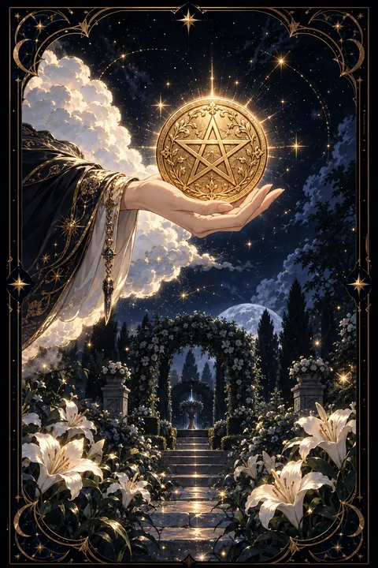

펜타클 에이스 카드 — 새로운 기회와 물질의 씨앗
펜타클 에이스 카드 한눈에 보기
펜타클 에이스 카드 상징 읽기

동네보살의 카드 그림은 전통 라이더–웨이트 덱의 뜻을 새 그림으로 옮긴 것입니다. 아래 상징 설명은 전통 덱의 그림을 기준으로 합니다.
구름 사이로 뻗어 나온 손이 커다란 금화 한 닢을 받쳐 들고 있습니다. 하늘이 보낸 선물처럼 현실의 기회가 눈앞에 주어진다는 뜻입니다.
금화에 새겨진 오각별은 흙의 원소를 상징합니다. 몸과 돈과 일처럼 손으로 만질 수 있는 삶의 영역을 가리키며 펜타클 한 벌이 다루는 주제가 바로 이 현실의 살림살이입니다.
아래쪽 정원에는 흰 백합이 피어 있고 길이 산울타리 아치까지 이어져 있습니다. 가꾸어진 정원은 이미 마련된 안정된 터전을, 아치 너머로 보이는 산은 이 기회를 발판 삼아 나아갈 더 먼 목표를 나타냅니다.
길이 곧게 나 있다는 것은 기회가 저절로 커지지 않고 한 걸음씩 걸어 나가야 결실로 이어진다는 점을 알려 줍니다. 백합의 흰색은 욕심보다 맑은 의도로 시작해야 오래간다는 메시지입니다.
펜타클 에이스 카드 정방향 뜻
정방향 펜타클 에이스는 새로운 수입, 일자리, 배움의 기회처럼 현실에서 쓸 수 있는 밑천이 들어온다는 신호입니다. 규모가 크지 않더라도 앞으로 오래 자랄 수 있는 씨앗이라는 점이 중요합니다.
이 카드는 막연한 기대보다 실제로 손에 쥐는 결과를 약속합니다. 새 직장 제의, 부업의 시작, 오래 준비한 일의 첫 성과처럼 눈에 보이는 변화가 찾아오기 쉽습니다.
다만 씨앗은 심어야 싹이 틉니다. 들어온 돈이 있다면 쓰기 전에 일정 부분을 먼저 떼어 저축하고 새로 얻은 기회는 구체적인 계획으로 옮겨 적어 두세요. 첫 몇 달의 꾸준함이 이 기회의 크기를 결정합니다. 몸과 생활을 돌보는 새 습관을 시작하기에도 좋은 때라서 작은 루틴 하나를 정해 두면 든든한 바탕이 됩니다. 지금 받은 기회를 가볍게 여기지 않는 태도가 앞으로의 풍요를 여는 열쇠입니다.
펜타클 에이스 카드 역방향 뜻
역방향 펜타클 에이스는 좋은 기회가 스쳐 지나가거나 들어온 밑천이 계획 없이 흩어지는 모습입니다. 제안을 받고도 망설이다 놓치거나 준비가 덜 된 채 서둘러 시작해 결과가 기대에 못 미칠 수 있습니다.
지출이 늘어나는 시기일 수도 있습니다. 당장 필요하지 않은 소비가 쌓이면 모아 둔 돈이 생각보다 빨리 줄어듭니다. 한 달 동안 쓰는 돈을 기록해 보면 새는 곳이 금방 드러납니다.
그렇다고 기회가 완전히 사라진 것은 아닙니다. 씨앗이 늦게 싹트는 해도 있듯이 지금은 땅을 고르는 시간에 가깝습니다. 놓친 기회에서 무엇이 부족했는지 정리해 두면 다음에 찾아올 기회를 알아보는 눈이 생깁니다. 새 일을 벌이기보다 기본기와 살림의 틀을 다지는 데 힘을 쓰는 편이 좋습니다. 작은 기회라도 차분히 붙잡을 준비를 해 두면 흐름은 다시 돌아옵니다.
연애에서 펜타클 에이스 카드
솔로라면 현실적이고 믿음직한 사람과 새 인연이 시작될 수 있는 시기입니다. 화려한 첫인상보다 약속을 잘 지키고 생활이 안정된 사람에게 마음이 끌리기 쉽습니다. 소개나 일로 만난 자리에서 좋은 인연이 싹틀 가능성이 있으니 부담 없이 이야기를 나누다 보면 마음이 자연스럽게 열립니다.
사귀는 사람이 있다면 두 사람의 사이가 한층 단단해지는 계기가 찾아옵니다. 함께 모으는 돈, 같이 사는 집, 미래 계획처럼 구체적인 이야기를 나누기에 좋은 때입니다. 서로의 생활 습관과 돈 쓰는 방식을 솔직하게 맞춰 보면 오래가는 관계의 바탕이 됩니다. 특별한 날의 선물보다 평소의 작은 성의가 더 큰 신뢰를 쌓습니다. 마음을 표현할 때도 말보다 손으로 챙겨 주는 방식이 더 잘 전해집니다. 새로 시작하는 관계라면 천천히 믿음을 쌓아 가는 속도가 오히려 잘 맞습니다.
재회·속마음 질문에서 펜타클 에이스 카드
재회를 묻는 자리에서 펜타클 에이스가 나오면 관계를 새로 시작할 현실적인 계기가 생길 수 있다는 뜻입니다. 다만 예전 감정을 되살리는 것보다 달라진 생활과 태도를 보여 주는 쪽이 훨씬 설득력이 있습니다. 상대는 말보다 안정된 모습에서 다시 만날 이유를 찾습니다. 헤어진 원인이 돈이나 생활 문제였다면 그 부분이 정리되었는지 먼저 스스로 점검해 보세요. 새 출발의 씨앗은 있지만 차근차근 심어야 뿌리를 내립니다. 짧은 안부 연락처럼 부담 없는 첫걸음부터 시작하는 것이 좋습니다. 상대가 반응을 보인다면 예전 이야기보다 앞으로의 계획을 담담하게 나누어 보세요. 서두르지 않는 태도가 새로 심은 씨앗을 지켜 줍니다.
일·금전에서 펜타클 에이스 카드
일과 직장에서는 새로운 기회가 문을 두드리는 카드입니다. 이직 제의, 새 프로젝트, 자격증 취득처럼 경력의 기반을 넓힐 일이 생기기 쉽습니다. 처음엔 작아 보여도 성실하게 키우면 오래 쓸 밑천이 됩니다.
금전 면에서는 새 수입원이 생기거나 기대하던 돈이 들어올 수 있습니다. 들어온 돈의 일부를 먼저 저축하는 습관을 들이면 흐름이 오래 이어집니다. 손재주나 기술을 살린 부업도 고민해 볼 만합니다. 계약이나 조건은 꼼꼼히 확인하고 첫 몇 달은 배우는 자세로 기본기를 다지세요. 작은 일감이라도 성실하게 마무리하면 다음 기회로 이어지는 추천이 따라옵니다. 새로 배운 기술은 기록해 두면 경력의 증거가 됩니다.
펜타클 에이스 카드는 예일까 아니오일까
현실에서 손에 쥘 수 있는 기회가 새로 열린다는 카드이므로 긍정의 답에 가깝습니다. 그림이 거꾸로 뽑혔다면 기회는 있지만 준비와 계획이 뒤따라야 해서 조건부 답이 됩니다.
자주 묻는 질문
펜타클 에이스 카드 역방향은 나쁜 뜻인가요?
역방향 펜타클 에이스는 좋은 기회가 스쳐 지나가거나 들어온 밑천이 계획 없이 흩어지는 모습입니다. 제안을 받고도 망설이다 놓치거나 준비가 덜 된 채 서둘러 시작해 결과가 기대에 못 미칠 수 있습니다.
펜타클 에이스 카드가 연애 질문에 나오면요?
솔로라면 현실적이고 믿음직한 사람과 새 인연이 시작될 수 있는 시기입니다. 화려한 첫인상보다 약속을 잘 지키고 생활이 안정된 사람에게 마음이 끌리기 쉽습니다. 소개나 일로 만난 자리에서 좋은 인연이 싹틀 가능성이 있으니 부담 없이 이야기를 나누다 보면 마음이 자연스럽게 열립니다.
타로 카드는 어떻게 뽑나요?
타로 카드 페이지에서 78장을 섞으면 그중 22장이 펼쳐집니다. 마음이 가는 세 장을 고르면 과거·현재·미래 자리에 놓이고, 한 장씩 뒤집어 자리와 방향에 맞는 풀이를 읽습니다. 정방향과 역방향은 섞는 순간 정해집니다.